Bilan Personnel
J'ai beaucoup apprécié travailler sur ce projet. La dimension écologique est un sujet qui me tient particulièrement à cœur, et j'étais heureuse de pouvoir produire un travail graphique en lien avec cette thématique.
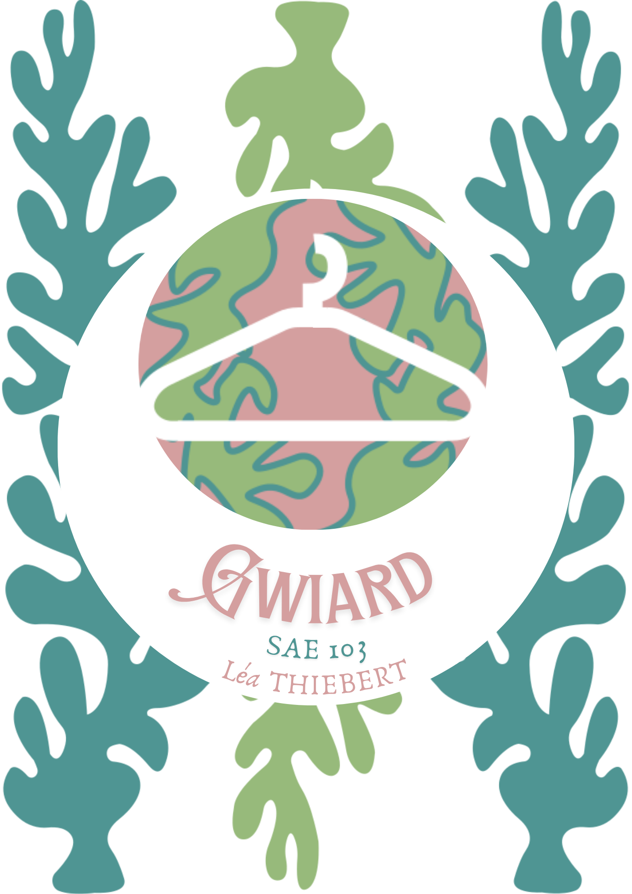
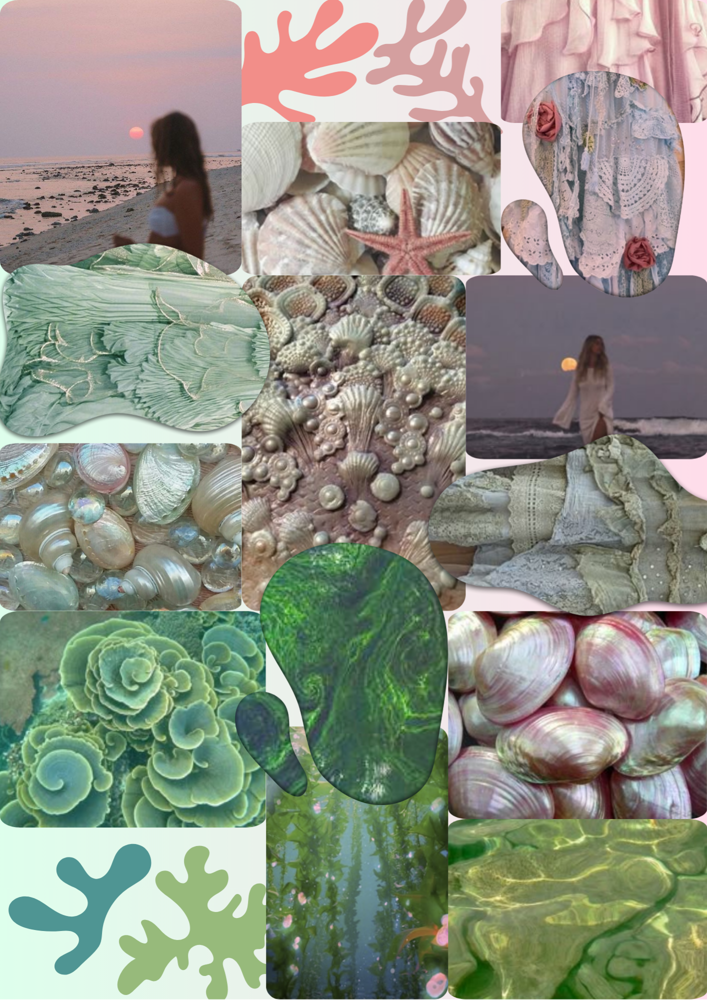
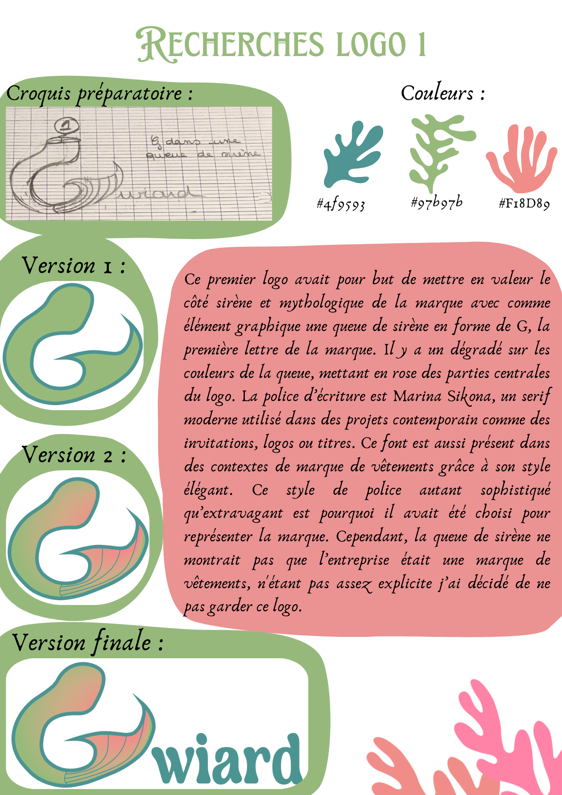
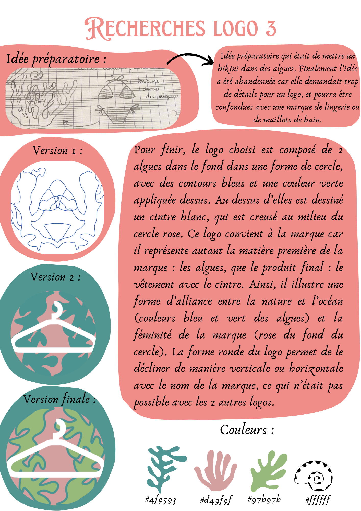
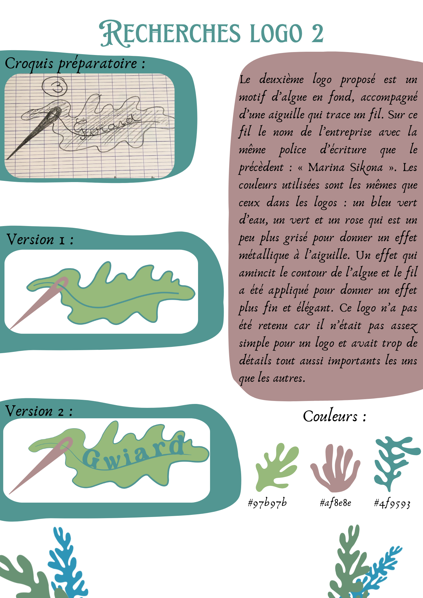
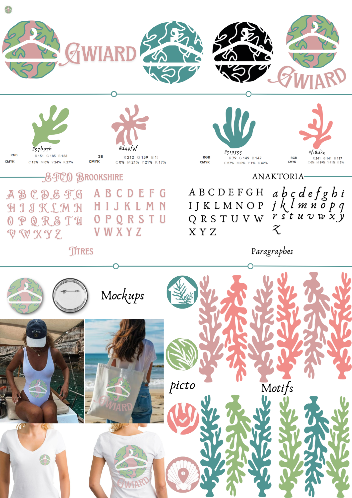
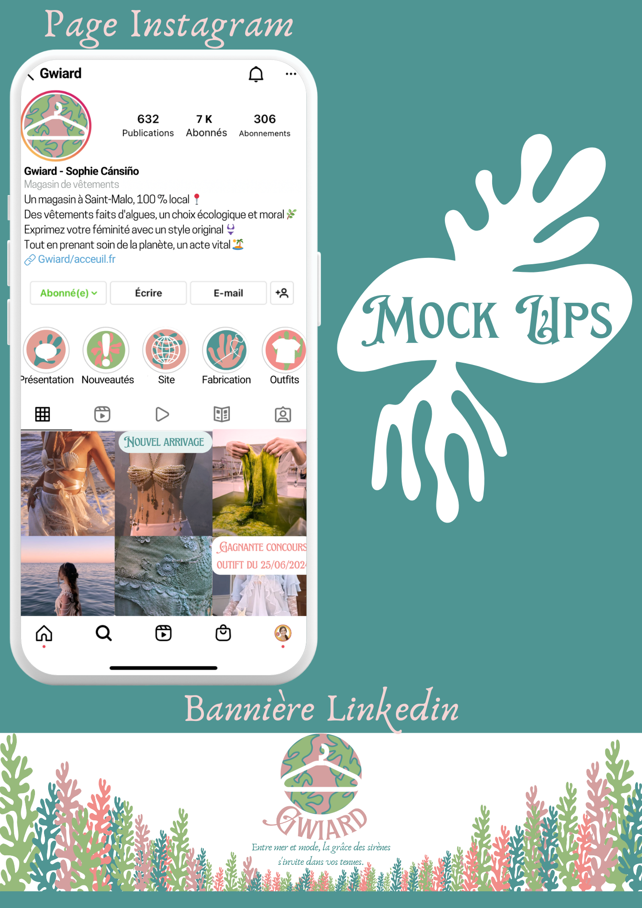
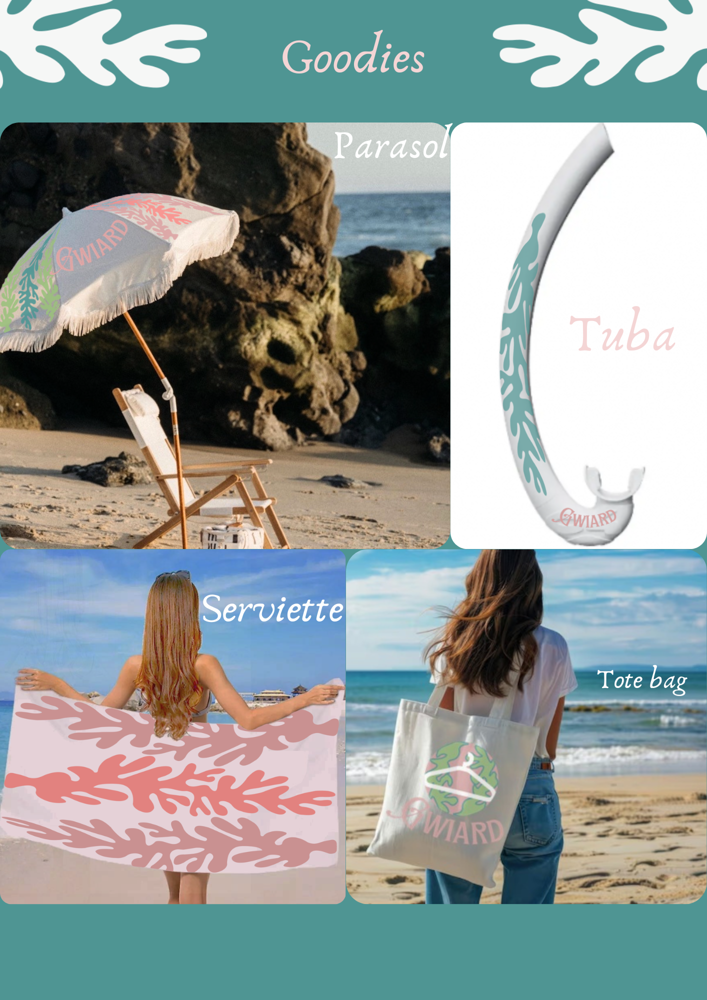

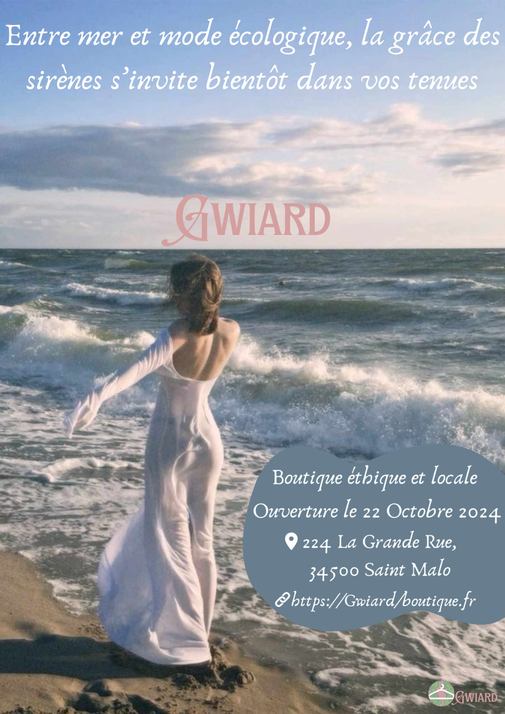
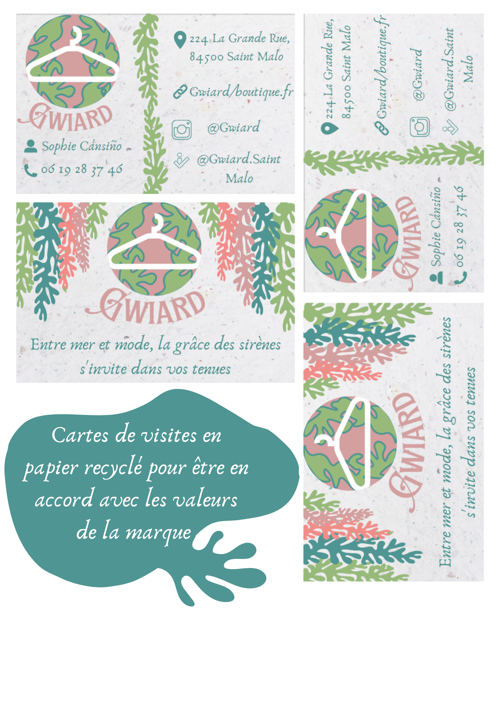
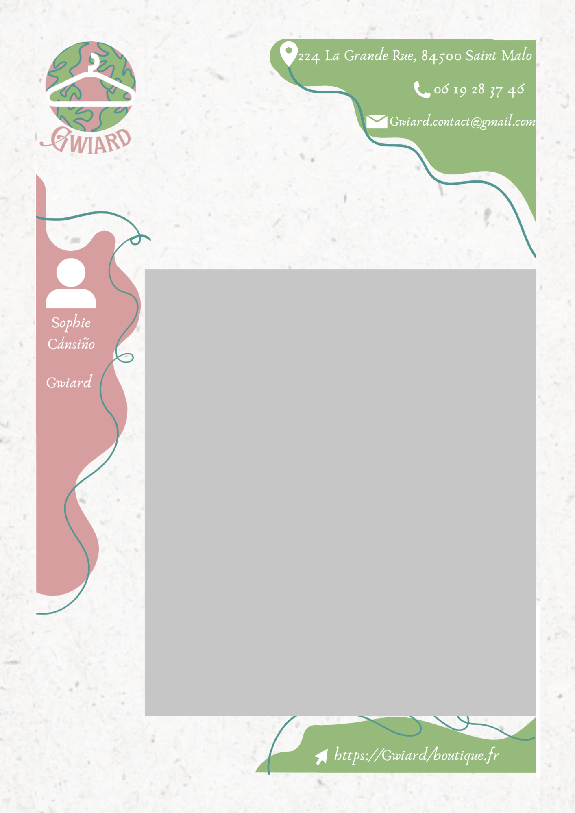
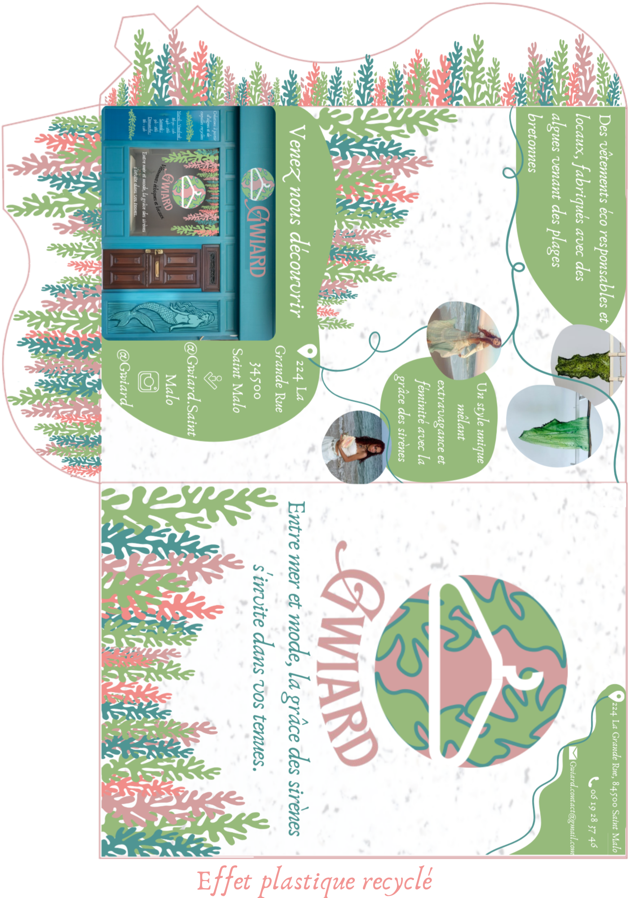
SAE, 1ère année de MMI
J'ai beaucoup apprécié travailler sur ce projet. La dimension écologique est un sujet qui me tient particulièrement à cœur, et j'étais heureuse de pouvoir produire un travail graphique en lien avec cette thématique.
Direction artistique de la marque : définition de la palette de couleurs et de la typographie, création du logo et du motif d'algues, puis déclinaison de cette identité graphique sur l'ensemble des supports print (affiche, flyer, carte de visite, pochette) et digitaux (bannière LinkedIn, Instagram, goodies, site web sur Figma).